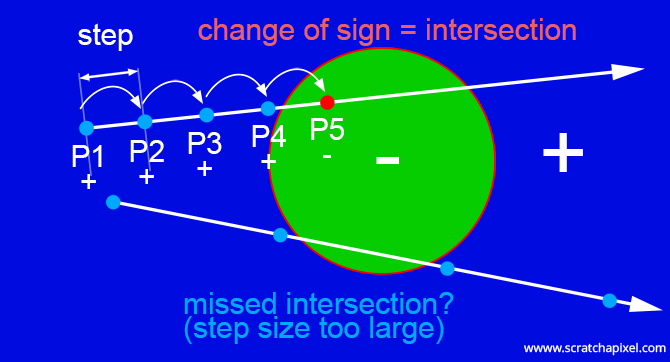

We didn't plan to write a lesson on rendering distance fields so quickly but this topic is useful to introduce some of the concepts we will be using in the next lesson devoted to ray-marching and volume rendering. Furthermore this is a topic quite popular among video game developers. We thought it would be great to explain this technique and the maths behind it in the "scratchapixel way": with simple words, some nice illustrations and of course a fully functional example.
First, when was this technique introduced to the computer graphics community? It is hard to know exactly who and when the technique was introduced to the CG community, but in 1996, John Hart published an important paper on this topic entitled Sphere Tracing: A Geometric Method for the Antialiased Ray Tracing of Implicit Surfaces. Few people before him had already made some research on rendering implicit surfaces and distance fields (an implicit surface is a distance field, but not all distance fields can be defined as implicit surfaces). Note that the technique described by Hart is not the only possible method for rendering distance fields and/or implicit surfaces but it is one of the most popular (ray-marching is another one).
Second what is it about? Some mathematical shapes can easily be described with equations. This is the case of spheres for example. In the lesson A Minimal Ray-Tracer: Rendering Simple Shapes (Sphere, Cube, Disk, Plane, etc.) we explained that spheres could be defined using the following equation:
$$x^2 + y^2 + z^2 = r^2.$$In others words, if you take the coordinates of a point on sphere of radius \(r\) and raise them to the power of two, then their sum will be equal to the sphere's radius raised to the power of two. Simple. The advantage of using an equation to describe a 3D shape is that we can use mathematics or at least mathematical methods to compute the intersection point between a ray (a line) and these shapes (it can be a sphere, a cone, a torus, a plane, etc.), which in ray-tracing is what we are interested in. In the aforementioned lesson, we solve the ray-sphere intersection problem with an analytic method in which we equate the parametric equation with the sphere equation and solve for \(t\), the ray parametric distance.
$$x^2 + y^2 + z^2 - r^2 = O + tR$$
Where \(O\) is the ray origin and \(R\) the ray direction. The sphere equation belongs to a family of equations called quadric functions and the roots (in other worlds the solutions) of quadric functions can be computed analytically as well. Details on this method can be found in the lesson devoted to the topic of ray-tracing simple shapes. Problem solved.
Though in mathematics, there is often more than one method to solve a given problem. And Hart proposed an alternative method for computing the roots of quadric functions. What the two methods have in common though, is that they rely on the fact that shapes can be described with equations and that these equations have properties that can be used to solve the problem at hand.
You may ask why? What's the advantage since we already have an elegant solution to solve this problem? And that's a very valid question. From a practical standpoint, while Hart's method has its own challenges (which we will explore in this lesson) it also has the advantage of being pretty fast to compute (compared to ray-marching for instance, which is why the method is popular among video games developers) but his technique is also well suited for doing what we call CSG (Constructive Solid Geometry) a technique that consists of modeling complex shapes by assembling together simples shapes such as spheres, planes, tori, cones, etc. CSG doesn't seem that useful but in fact it is, because you can perform boolean operations on shapes (add, subtract, etc.) as well as blend shapes together and that allows you to actually create shapes which would take a very long time to model if were using a hand modeling approach. We will show some examples of that in this lesson as well. Being able to blend implicit surfaces is a quality that parametric surfaces lack (and one of the main motivations for using them).
More importantly, while there is a solution for quadric functions such as the equation describing a sphere, not all implicit functions are quadric functions and it is actually sometime difficult to find a solution for other types of implicit functions. Hart's method is useful because it works for all types of implicit functions.
Let's now explore Hart's method. Be warned, it will involve some maths but as usual, we will explain every equation from scratch with simple words, so don't be frightened. But before we look into the maths themselves we will explain Hart's technique in an very intuitive manner.
What is an Implicit Surface?
Hart's technique all start with the idea that many shapes can be defined implicitly. As the name suggests, the actual surface of these shapes is not "explicitely" defined. In other words, the equation that defines an implicit shape can't be used directly to build the surface of that object to the contrary of parametric surfaces. For example the parametric form of a sphere is:
$$ \begin{array}{l} x =\cos(\phi)\sin(\theta) * r\\ y=\sin(\phi)\sin(\theta) * r\\ z=\cos(\theta) * r \end{array} $$if you plug values for the parameter \(\theta\), \(\phi\) and \(r\) (the radius of the sphere) in these equations you will get the position of a point on the sphere. It is "explicit". But the implicit form of the sphere \(f(x,y,z) = x^2 + y^2 + z^2 - r^2 = 0\) will only tell you wether you are outside, inside or on the surface of the sphere and this is the only information the equation provides you with to display or render the surface itself to the screen.
More precisely, implicit equations return the (squared) distance of any point in three-dimensional space to the surface of the object. Logically when a point lies exactly on the surface of an implicit surface, that distance is 0. In fact the function returns the signed distance to the surface, so if the point is inside the object, the distance so to speak will be negative, and if the point is outside the surface, the "distance" will be positive. The collection of points that lie exactly on the surface (points for which the distance to the surface returns 0) form what we call an isosurface (or level surface or isocontour in 2D).
This idea is illustrated in the following series of images. The grey images represent a render of a couple of simple surfaces (a sphere and a cube). The brightness of the image represents the distance from the pixel to the isosurface of the object. You can find the source code we used to render these images below. Note that because pixels that are inside the shape have negative values, we need to use their absolute values. The bottom-left image shows two points, one outside of the object (P1) and one inside (P2). The bottom-right image shows that all points that are outside of the shape have positive values or "distances" and that all points that are inside have negative values (all points making up the isosurface have a value of 0).

Here is the source code used to generate the images above:
The Ray-Marching Algorithm
Can we take advantage of the fact that points inside or outside the surface are negative or positive in order to compute the intersection of a ray with an implicit object? What we can do is test whether the current origin of a ray is inside the object by computing its signed distance to the isosurface. Though this just gives us some information about where the ray's origin is located in space with respect to the surface, not where the ray intersects the object (assuming the ray intersects it at all). Though what we can do next is move along the ray and compute the signed distance again. If you keep stepping along the ray and then compute the signed distance at the new position, note that the sign of the "signed distance" will change when we move from one side of the isosurface to the other. In the image below, you can see that P4 is positive but P5 is negative. This change of sign (from positive to negative and vice and versa) indicates that the ray crossed or intersected the isosurface. That's not exactly providing us with the intersection point that we need, though we made some progress. At least now we know that ray intersects the object and we also know that it intersects its surface somewhere between P4 and P5.
The process of actually moving along the ray by small regular increments is called ray-marching. This technique is used to render volumes. We will study it in detail in the next lesson. Though here is list of problems this technique has:
- You may ask: "how do I choose the size of the increment?". This question is important indeed because as you can see in the bottom of the above figure, if the step size is too large, then we can actually miss to go from one side of the object to the other and thus miss the chance to find out that the ray is somehow intersecting the object.
- Though as you can also imagine, the smaller the step size, the longer it will take to "march" along the ray until we go across the border or isoline of the object. So a small step size means longer render times, and large step size means we can miss the object.
- Finally the last problem is "when should we stop marching along the ray?". We can always set a maximum distance though if some objects are further away than that distance, we will miss them as well. Of course we can always engineer solutions to work around this problem though let's keep in mind that this a possible problem.

Figure 1: the segment is split in the middle. The sign of the midpoint sign distance is used to define which segment intersects the shape. The process is repeated until the midpoint gets eventually close enough to the object's surface.
Though even though we showed that this method can be used to detect if the ray intersects an object (assuming the step size is small enough), it doesn't seem to be useful to find exactly where the ray intersects that object. All we know is that there is an intersection somewhere between two points (if the signs of the signed distances to the isosurface at these two points are different). To get closer to the isosurface, we are going to use a technique called bisection method or binary search method. The idea is pretty simple. We know the intersection is somewhere between P4 and P5. So what we are going to do is take the point equidistant from P4 and P5 (in other words the midpoint) and evaluate the implicit function at this position. If the signed distance at that point is negative, then we know that the midpoint is inside the object and that the segment midpoint-P5 is also entirely inside the object. That leaves us with only one other option which is that the segment P4-midpoint is the one that intersects the object's isosurface. We still don't know exactly where this intersection takes place but as you can see in figure 1, the segment p4-midpoint is smaller than the segment P4-P5 which means that as we keep repeating the process, the points making up the segment that overlaps the object's boundary get closer and closer to the isosurface. Eventually the distance to the surface is considered so small that we can accept that these points more or less lie on the object's surface. So in short we stop subdividing the segment that straddles the object's surface, as soon as the distance of the midpoint making up the new segment to the isosurface is smaller than a given threshold. And that point becomes our intersection point even if it doesn't lie exactly on the isosurface (we are ready to live with a small error).
As with the ray-marching algorithm this method presents a few problems. First as you can see all it does is converging to the exact solution. Of course sometime the midpoint might lie exactly on the isosurface but the bisection method doesn't guarantee that it will find that point all the time. All it guarantees, is that as you keep subdividing the segment that overlaps the surface, the points making up that segment will get closer and closer to the surface. Now the other problem is "how do we choose what that minimum distance is?". Choosing the "right" value for the threshold is the same than choosing a value for the step size. It's essentially a guess and finding the right tradeoff between speed and accuracy. Though note that the threshold needs to be smaller than the step size.
So what do we have now? We designed a method called ray-marching which combined with the bisection method can be used to approximate the position of the intersection point of a ray with an implicit surface. Though as suggested, the time it takes to find this point increases linearly with the distance between the ray origin and the object. The further the object, the longer in takes to reach its surface. Can we do better? Indeed, and that's what Hart proposed.
Sphere Tracing: The Hart's Way

Figure 2: we first find the nearest point on the surface. From there we can draw a circle that defines a volume within which we can move freely without ever intersecting the shape.

Figure 3: we then move along the ray direction by the distance $||AB||$.

Figure 4: we repeat the process from figure 2 and 3 until we get close enough to the surface.
For now we will just try to explain the principle of this method. It will be easier to then look at some mathematical equations (next chapter). First Hart's method is based on the idea that we can find the closest point $B$ on the surface of an implicit shape to any random point $A$ in space. Once you have $B$, the closest point from $A$ that lies on the surface of the shape, you can trace a circle $C$ (a circle in 2D, a sphere in 3D) around $A$ with radius $||AB||$. From there, you can make a useful observation. If you start from $A$ and move in any direction you like around $A$, then you will not intersect the shape per se (you might eventually lie on it if you move to $B$), as long as you stay within the boundaries of that circle $C$.
Hart used this observation. He said "let me compute the nearest point on the object surface from the ray origin (my point $A$) then move in the ray direction by a distance that does not exceed the circle or sphere radius ($||AB||$)". Because of the observation we just made, we know that this new point is necessarily on the same side of the object than the ray's origin (the blue part in figure 3). Though you can also see that this new point is eventually (we insist on "eventually" because this is not clearly visible in figure 3) closer to the surface than was the ray's origin. And as you keep repeating this process (computing the smallest distance from a point to the surface, and moving in the ray's direction by a distance exactly equal to that distance), then you can observe that we get closer and closer to the surface (in figure 4 this is not necessarily obvious as we get very close to the surface after only 2 steps, but in the figure below you can see that it requires more than just a couple of steps).
You eventually get so close to it, that like in the case of the binary search method, you can assume that the point is actually on the surface of the object and this point as we know it, is the point where the ray intersects the object. You will notice that this technique is similar in a way to the ray-marching technique and suffers also more or less from the same problem. You have to choose the threshold distance by hand and thus tweak the value a little to get the best balance between speed and accuracy. Though note also that generally, less steps are required to reach the surface within the threshold distance than with the ray-marching method. In the figure below, only 7 steps are necessary with Hart's method, instead of 12 (without the binary search) with the ray-marching method. Thus in principle, Hart's method, is generally faster than ray-marching though as we will show later, this is not necessarily always true.

Here is some pseudocode to illustrate Hart's method (we will write a real example later on):
Why is the method called sphere tracing? Not because we ray-trace spheres. As we will show later in this lesson, this technique can be used to render all sort of shapes. It is called that way because when you compute the smallest distance from a point to the surface this distance can be seen as the radius of a sphere within which we can move freely without ever intersecting the shape. We don't really need to trace these spheres per se (in the literal sense of the term), but describing the algorithm as a succession of spheres within the volume of which there is only "empty space" (no shape) is a good way of visualising how the algorithm works.

Figure 5: it is best to use the optimum distance defined by the distance from A to the nearest point on the surface (B), but if this is not possible because we don't have a function that can compute that distance exactly, then we can use other distances as long as they are lower than the optimum distance. If we can find functions (DUFs) that underestimate the optimum distance, then we can use them too in the sphere-tracing algorithm.
Before moving to the mathematical details of the sphere-tracing method as well as look at a real implementation of this algorithm, let's mention a last important point. The distance from a point to the shape surface is computed using an equation or function that depends on the shape. The equation used to compute the nearest point on a cone is different from the equation used to compute that distance on a sphere, a cube or a cylinder, etc. But keep in mind that the sphere that we trace around the point delimits a volume within which we can move safely without intersecting the shape being tested. This practically means that if we define spheres that are smaller than that optimum sphere, the algorithm still works (figure 5). Of course if the spheres are smaller, it will take longer to get closer to the surface, but the technique will work nonetheless. Why does that matter? It matters, because as we will see in the next chapter, finding a function that returns the optimum distance for each kind of shape we wish to render, is not always simple nor even sometimes possible. Hart calls such functions distance implicit functions (or DIFs and as may guess these are called implicit because these functions are derived the shapes' implicit functions). But that's okay because as we just explained, while computing the "optimum distance" is best (the distance from a point to the nearest point on the shape), it is not absolutely necessary for the algorithm to work. All we need is an equation that returns a distance that is equal to (in the best case) or lower than this optimum distance. Hart calls these functions distance underestimate implicit functions (or DUFs). The important part here is underestimate. Any function for a given shape that is either a DIF or a DUF will work. Again, as we said, DIFs are better, but DUFs will do in case a DIF for a given shape cannot be found.

Figure 6: the sphere-tracing algorithm in action in two different scenarios.
So far, we have only considered very simple examples but in figure 6 we showed what the algorithm does when dealing with more complex shapes. As you can see, it might take a while to get closer to the point where the ray intersects the shape but more importantly, note that the spheres don't necessarily decrease in radius as we get closer to that point (figure 5 top). The size of the spheres depends on the scene configuration and can increase or decrease from one step to the next. This is just to illustrate something we mentioned earlier, which is that sphere-tracing is not necessarily faster than ray-marching. This depends entirely on the shapes that are being rendered and their arrangement in the scene. It might be best to say that the main advantage of sphere-tracing compared to ray-marching is its ability to move along the ray using some sort of adaptive step-size that is automatically computed by the algorithm, removing the need of having to manually choose a step size.
What's Next
In this chapter we explained the sphere-tracing algorithm in an intuitive way and introduced the concept of DIF and DUF. In the next chapter we will formalise these concepts using maths and implement a basic "sphere-tracer" that we will improve as we progress in the lesson.
References
Sphere Tracing: a Geometric Method for the, John C. Hart, 1994.
Sphere tracing: a geometric method for the antialiased ray tracing of implicit surfaces, John C. Hart, 1996.
Efficient Antialiased Rendering of 3-D Linear Fractals, John C. Hart, Thomas A. DeFanti, 1991.
Data Structure for Soft Objects, Geoff Wyvill, Craig McPheeters, 1986.